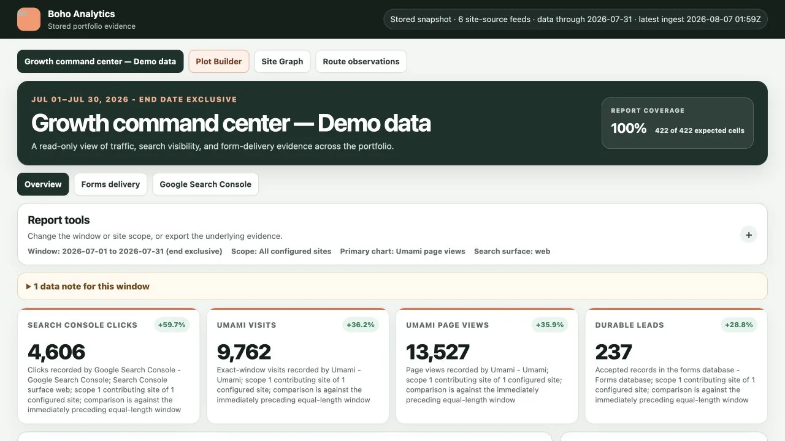
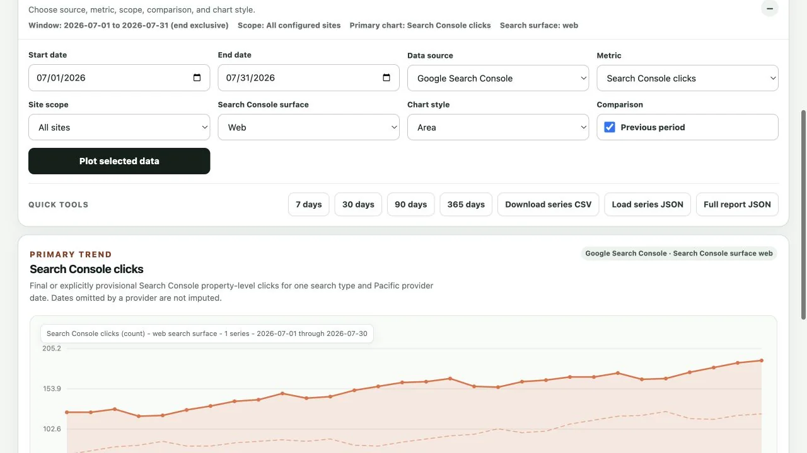
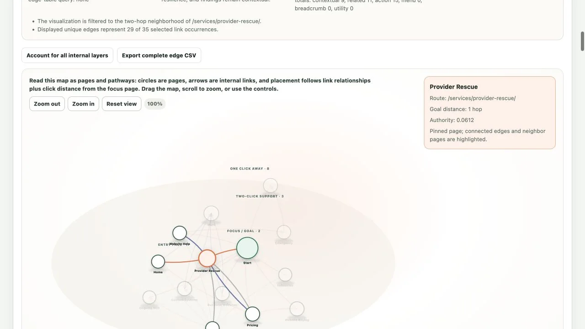
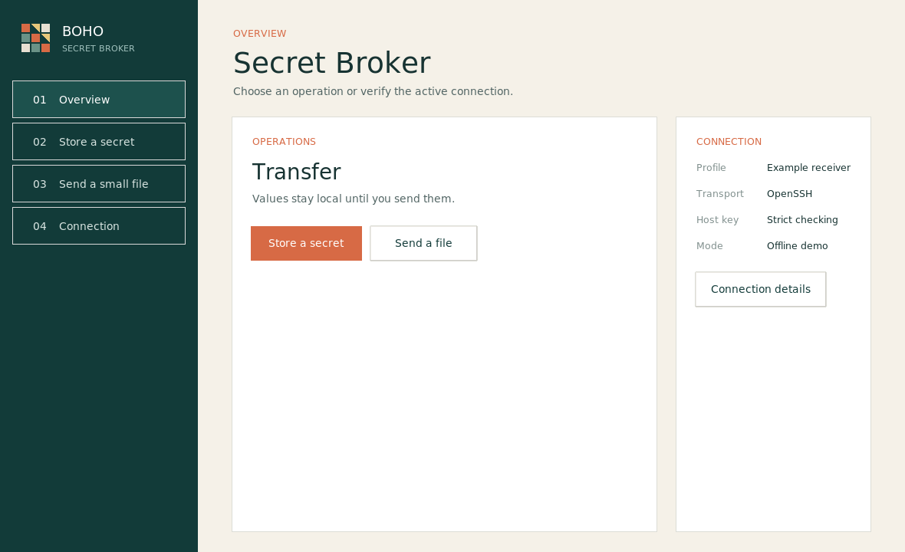
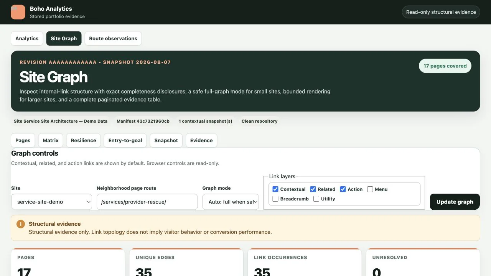

Weekly property-level evidence
More appearances. Less efficiency.
- Impressions
- 5,120
- Clicks
- 60
- CTR
- 1.17%
- Position
- 18.9
Boho Analytics / Actual software output
Synthetic demonstration data
No client results
Real Boho software



Actual interface captures · Synthetic demo evidence · No client results
Search Console / Decision workbench
Synthetic educational data
Fictional service business
Eight complete weeks
Weekly property-level evidence
Synthetic educational example · Search type: web · Not performance evidence or a forecast
Provider Rescue / Control before migration
Illustrative control map
Every rescue starts
with an inventory
Example state · Not a diagnosis of a real website · Ownership must be verified
Boho demo library / Owned design proof
Boho-owned designs
Fictional businesses
Not client work
Four distinct customer paths · One Boho-owned demonstration library
Custom systems / Actual Boho interfaces
Real interfaces
Bounded workflows
Inspectable output


Actual interfaces · Analytics and graph views contain synthetic demo evidence
Measurement architecture / Source labels stay attached
Public architecture
Separate provider meanings
No blended vanity score
Impressions, clicks, CTR, average position
Visibility, query/page opportunities, search-result choices
Acquisition, sessions, engagement, configured events
On-site behavior under the configured consent and event model
Visitors, visits, pageviews, referrers, routes
Independent usage trends and content-path review
Accepted, pending, sent, failed, independently observed delivery
Whether an inquiry survived each operational checkpoint
Provider meanings remain separate through collection, storage, display, and interpretation
Industry websites / Shared trust, different action
Customer-path model
Not recorded behavior
Built for orientation
Customer-path model · The shared path builds confidence; the outcome carries the business intent
Website buying / Proposal anatomy
Buyer guidance
Not legal advice
Contract terms vary
Pages, features, revisions, exclusions, and acceptance
“A complete website” with no inventory
Who writes, supplies, approves, migrates, and owns it
Content responsibility appears after signing
Account owner, access, recovery, and required record changes
The provider registers everything in its own account
Account owner, repository, deployment, backup, and handoff
No exportable source or documented release path
Storage, delivery, accounts, access, consent, and testing
A “success” screen is treated as delivery proof
URLs, redirects, downtime, rollback, data, and validation
“We will point the domain when ready”
Credentials, documentation, training, warranty, and support boundary
Continuity depends on retaining the same provider
Buyer guidance · Review actual agreements with an appropriate professional when legal interpretation matters